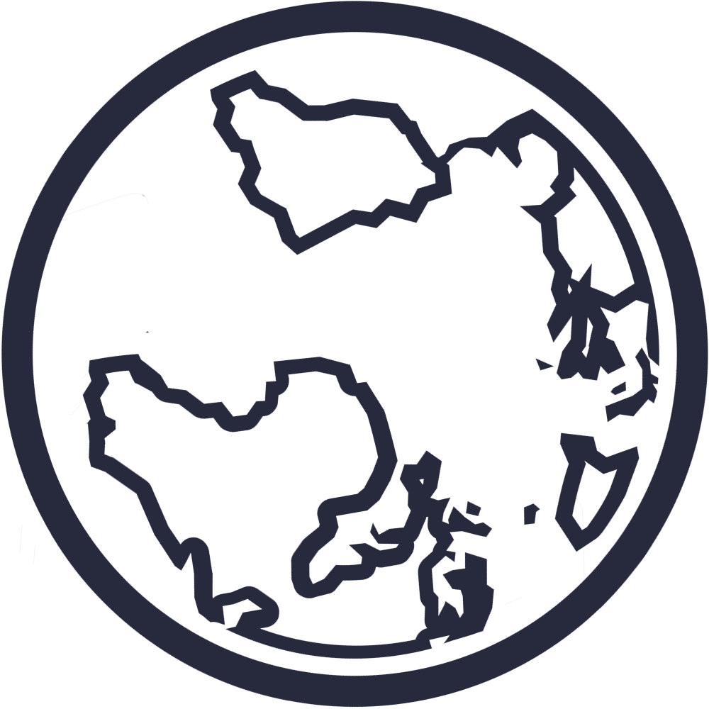

About
Sirius RIS is an open-source radiology information system developed thanks to the following technologies.
Angular
RxJS
OHIF
NodeJS
MongoDB
Docker
Help
speed Simple, efficient, and fast
verified_user Robust, secure, and auditable
visibility Low-light interface to suit radiology environments
badge Unambiguous person identification | ISO-3166 | UNAOID/ICAO v1.0
account_tree Scalable privilege system for users
